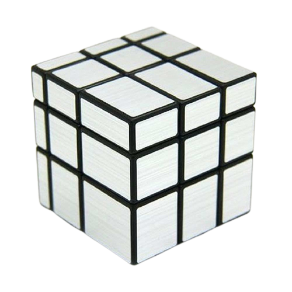

The classic Rubik's cubes are puzzles that are just smaller or larger versions of the original Rubik's Cube. The sizes go from the 1x1 all the way to the largest one currently, the 17x17. This major size variation forces you to solve the puzzle slightly different than you would the original 3x3. Whether that is omitting a step in the smaller ones (2x2) or having additional steps like creating the center pieces in the larger ones (4x4 and beyond).
There are also 3x3 modified cube which basically take the concept of 3x3 Rubik's cube and change or modify to create an entirely new puzzle. For example, the mirror cube (on the right) has the same mechanism as the standard Rubik's Cube, but instead of different colored stickers on each face, it has reflective, metallic stickers that create a mirror-like effect.
The last category of puzzles are the irregular shaped puzzles, puzzles that moves away from the standard cube shape. Two examples of this would be the Pyraminx and the Megaminx. The Pyraminx is a pyramid-shaped puzzle with four triangular faces while the Megaminx has twelve faces arranged in a dodecahedron shape.Though the goal is usually same as the standard cube (align the colors on each face so they match) their tricky shapes and ways of rotating allow for fun and interesting puzzles.